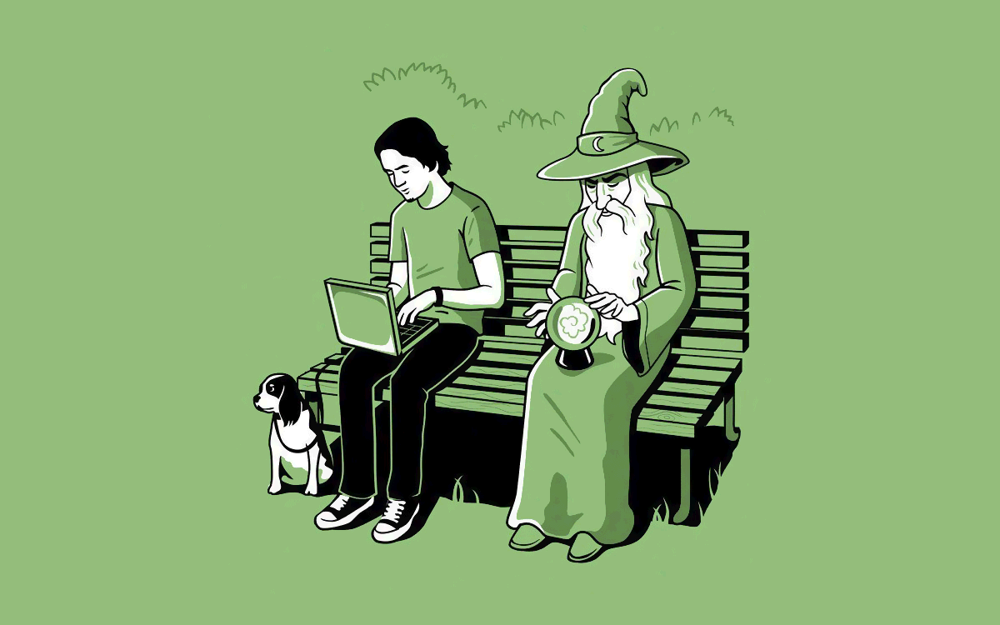

Что такое CSS-темы?
Что мы вообще понимаем под этим словом? Вариантов много.
- Когда подменяем весь css
- Когда меняем стили по каскаду одним правилом
- Когда меняем внешний вид модификаторами
Где же хипстерские штуки?

Webpack, Angular, сборка в Gulp, и всё это на бутстрапе.
Мы не знаем где что лежит и что от чего заивист. И тут нам нужны темы.
Как мы докатились до этого?
Bootstrap styling
$navbar-height: $mainNavbar-height;
$navbar-inverse-bg: $project-header-bg;
$navbar-inverse-link-color: $project-header-link-color;
ну вы поняли…
$themes: (
codepen: (
foreground: #CCCCCC,
),
codepen-light: (
…
)
);
Красиво в постах на Medium…
А как в жизни?
<button class="btn btn-primary btn-t-codepen-light" type="button">Ok</button>
Что же делать?
Юзать варианты от простого к сложному.
- Замена css
- Каскад
- Модификаторы
- Генерация на основе переменных
Серебрянной пули нет.